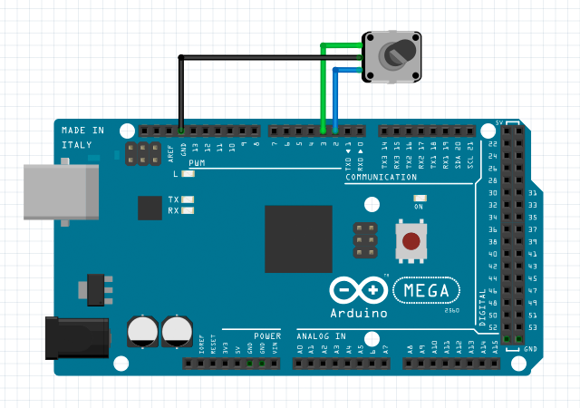
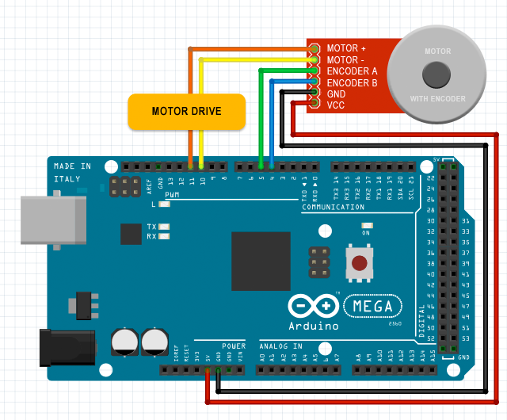

var encoder1 = new Encoder();
// set up an encoder
encoder1.setup(
1, // unit 1
2, // pin 2 to encoder signal A
3, // pin 3 to encoder signal B
DigitalInResistor.INTERNAL_PULLUP, // enable internal pull-up resistor
2000 // sampling interval is 2000 microseconds
);
// get the present encoder counter value
encoder1.whenGetValue = function(value) {
alert("encoder counter value is " + value);
};
encoder1.getValue();
// start a monitor to detect the encoder counter value updating
encoder1.whenUpdateValue = function(value) {
document.getElementById("status").innerHTML = "encoder counter value is " + value;
};
encoder1.startMonitor();
// reset encoder counter value
encoder1.setValue(0);
Encoder Counter
Encoder counts pulses from quadrature encoded A/B signals,
which are commonly available from rotary knobs,
motor or shaft sensors and other position sensors.
The encoder object maintains a 24-bit counter for the positioning.
The count value can range between -16777215 (-0xffffff) and 16777215 (0xffffff).
ENCODER:
MOTOR:

var encoder2 = new Encoder(); // set up an encoder encoder2.setup( 1, // unit 1 4, // pin 4 to encoder signal A 5 // pin 5 to encoder signal B ); // start a high sensitive monitor to detect the encoder counter value updating // with defaults (for the highest sensitivity) encoder2.startMonitor(); // start a low sensitive monitor to detect the encoder counter value updating // the minimum value updating interval is 100 milliseconds encoder2.startMonitor(100);
The optional parameter updating interval is the minimum interval time in milliseconds to emit the callback for the counter value updating.
Encoder
setup(unit, pinA, pinB, resistor, samplingInterval)
initialize an encoder object with two specified pins of A/B signals (pinA and pinB) on a specified unit.
optional parameter resistor is the configuration for using external or internal pull-up resistor connections.
samplingInterval is the optional parameter for setting the frequency to read encoder A/B signals.
return value: true if successful, otherwise false.
getValue()
request to get the present value of the encoder counter, an event callback whenGetValue() will be received later.
return value: the encoder counter value.
setValue(value)
set a value to the encoder counter, reset the counter if set 0 to the parameter.
return value: true if successful, otherwise false.
startMonitor(updatingInterval)
start a monitor to detect the encoder counter value updating.
parameter updatingInterval is in milliseconds.
return value: true if successful, otherwise false.
stopMonitor()
stop the monitor to detect the encoder counter value updating
return value: true if successful, otherwise false.
Return Value Note:
The function will return a value when your h5control program uses waitRsp mode, but no return value when uses nowaitRsp mode.
whenSetup(done)
receive the callback when setup done. parameter done is true if successful, or false otherwise.
whenGetValue(value)
receive the callback to get the present encoder counter value after called function getValue().
whenSetValue(value)
receive the callback when the encoder counter value is set using function setValue().
whenStartMonitor()
receive the callback to confirm the monitor is started after called function startMonitor().
whenStopMonitor()
receive the callback to confirm the monitor is stopped after called function startMonitor().
whenUpdateValue(value)
receive the callback when the encoder counter value is updated after started the monitor.